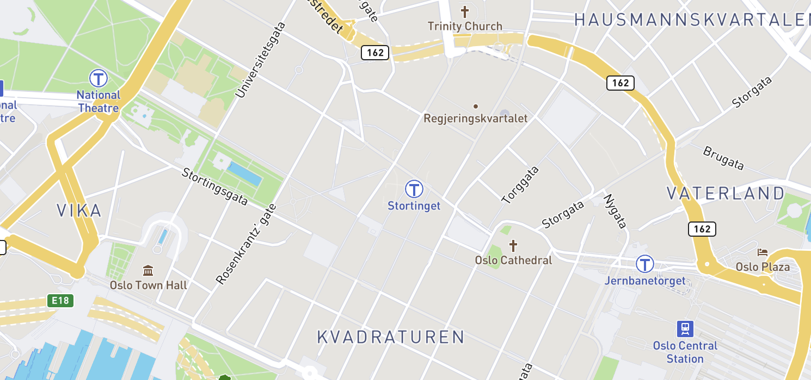

<ion-header>

  <ion-navbar>
    <ion-title>My Guide</ion-title>
  </ion-navbar>

</ion-header>


<ion-content padding class="card-background-page">

  

  <div>
    <p>Time: {{ time }}</p> 
    <p>Attractions: {{ attractionsCount }}</p>
  </div>

  <!--<ion-card>
    <ion-label>START</ion-label>
    <ion-input></ion-input>
  </ion-card> -->

  <div *ngFor="let item of tourList.getTourList(); let i = index;">
    <ion-card (click)="openAttraction(item.title)">
      <div>{{ item.title }}</div>
      <p>{{ item.time }}h</p>
    </ion-card>

    <div class="timeline">
      <ion-icon name="walk"></ion-icon>
    </div>
  </div>
  
</ion-content>
